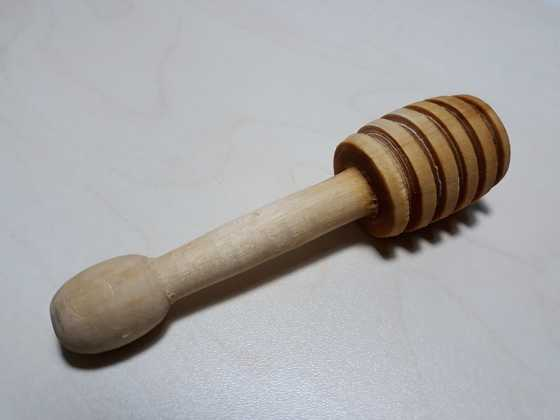
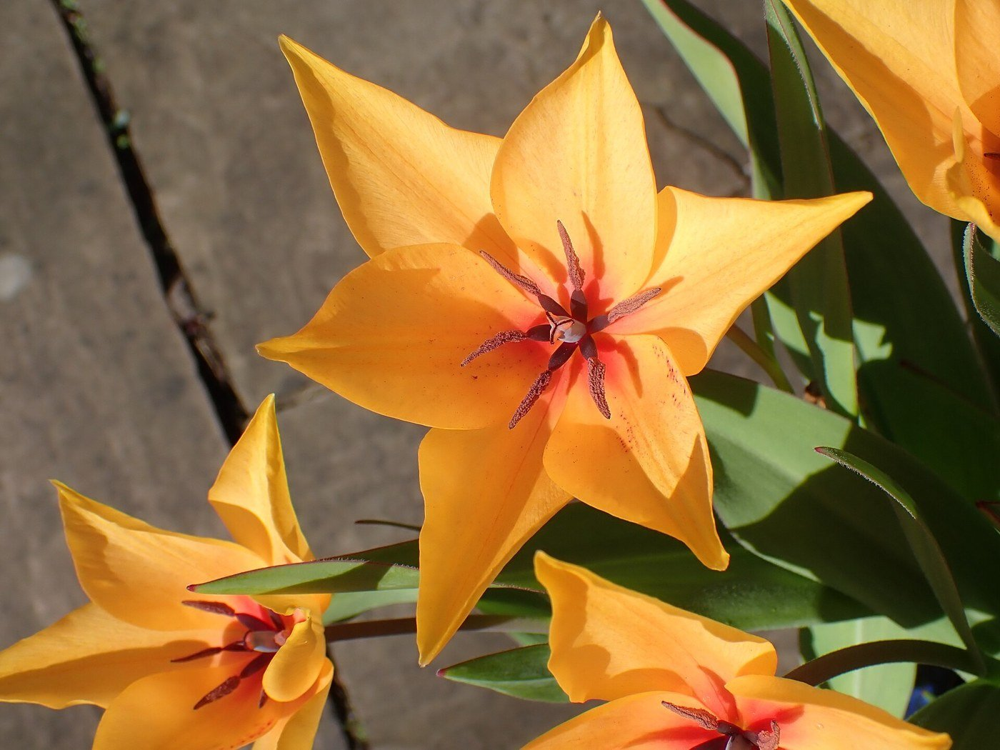

店名のこと
ノンノ=おじいちゃん。カッフェ=コーヒーの店
「nonno」はイタリア語で祖父を意味する言葉、「caffè」はコーヒー(またカフェ)を指す言葉です。
ここから先は、店名の語義から制作側が連想したイメージです。お店が語った由来・理念ではありません。「祖父の家で、ゆっくり食卓を囲むような時間」。そんなやわらかな空気を、このサイトの色と写真で表しました。

確認できたこと
手づくりで、ていねいに
久留米の紹介ページには、料理もスイーツも、小麦粉・バター・牛乳などの厳選した材料で手作りしている、と書かれています。手ごねのハンバーグの下に、ホワイトソースのグラタンとミートソースのスパゲッティが隠れた一品も紹介されていました(出典: 「あれこれ久留米」の紹介ページ。内容は変わることがあります)。



写真はフリー素材のイメージです。お店の写真・提供している商品を示すものではありません。
ご案内
お店の基本情報
| 所在地 | 〒830-0032 福岡県久留米市東町340-2 |
|---|---|
| 最寄り | 西鉄久留米駅から徒歩2分(紹介ページの記載) |
| 電話 | 準備中 |
| 営業時間 | 準備中 |
| 定休日 | 準備中 |
| ご予約 | 準備中 |
| 駐車場 | 準備中 |
| SNS | Instagram @nonno_caffe_ |

写真はフリー素材のイメージです。お店の写真・提供している商品を示すものではありません。